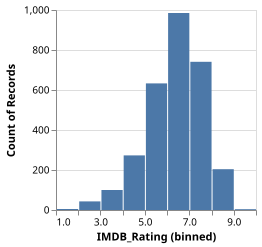
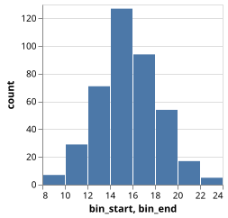
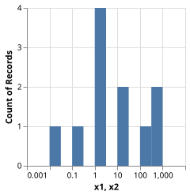
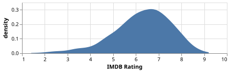
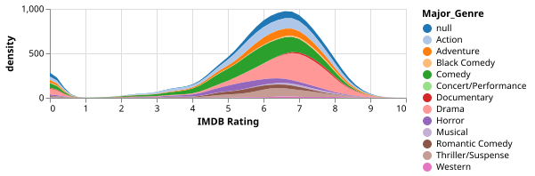
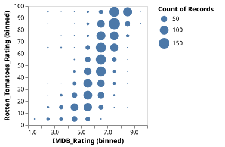
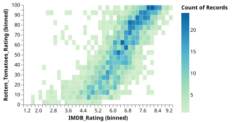
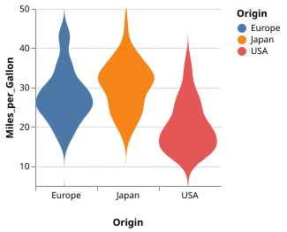
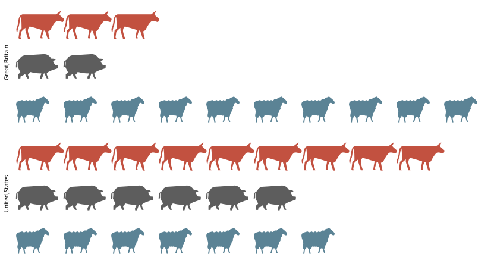
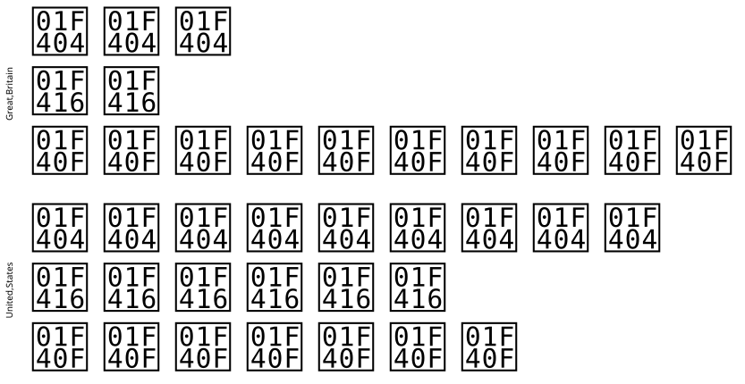

Histograms, Density Plots, and Dot Plots
Histogram
using VegaLite, VegaDatasets
dataset("movies") |>
@vlplot(:bar, x={:IMDB_Rating, bin=true}, y="count()")
Histogram (from Binned Data)
using VegaLite, DataFrames
data=DataFrame(
bin_start=[8,10,12,14,16,18,20,22],
bin_end=[10,12,14,16,18,20,22,24],
count=[7,29,71,127,94,54,17,5]
)
data |> @vlplot(
:bar,
x={:bin_start, bin={binned=true,step=2}},
x2=:bin_end,
y=:count
)
Log-scaled Histogram
using VegaLite, DataFrames
data=DataFrame(
x=[0.01,0.1,1,1,1,1,10,10,100,500,800]
)
data |> @vlplot(
:bar,
transform=[
{calculate="log(datum.x)/log(10)", as="log_x"},
{field="log_x",bin=true,as="bin_log_x"},
{calculate="pow(10, datum.bin_log_x)", as="x1"},
{calculate="pow(10, datum.bin_log_x_end)", as="x2"}
],
x={"x1:q", scale={type="log",base=10},axis={tickCount=5}},
x2=:x2,
y={aggregate="count",type="quantitative"}
)
Density Plot
using VegaLite, VegaDatasets
dataset("movies") |>
@vlplot(
width=400,
height=100,
:area,
transform=[
{density="IMDB_Rating",bandwidth=0.3}
],
x={"value:q", title="IMDB Rating"},
y="density:q"
)
Stacked Density Estimates
using VegaLite, VegaDatasets
dataset("movies") |>
@vlplot(
width=400,
height=100,
:area,
transform=[
{density="IMDB_Rating",bandwidth=0.3,groupby=["Major_Genre"],extent=[0, 10],counts=true,steps=50}
],
x={"value:q", title="IMDB Rating"},
y= {"density:q",stack=true},
color={"Major_Genre:n",scale={scheme=:category20}}
)
2D Histogram Scatterplot
using VegaLite, VegaDatasets
dataset("movies") |>
@vlplot(
:circle,
x={:IMDB_Rating, bin={maxbins=10}},
y={:Rotten_Tomatoes_Rating, bin={maxbins=10}},
size="count()"
)
2D Histogram Heatmap
using VegaLite, VegaDatasets
dataset("movies") |>
@vlplot(
:rect,
width=300, height=200,
x={:IMDB_Rating, bin={maxbins=60}},
y={:Rotten_Tomatoes_Rating, bin={maxbins=40}},
color="count()",
config={
range={
heatmap={
scheme="greenblue"
}
},
view={
stroke="transparent"
}
}
)
Cumulative Frequency Distribution
using VegaLite, VegaDatasets
dataset("movies") |>
@vlplot(
:area,
transform=[{
sort=[{field=:IMDB_Rating}],
window=[{field=:count,op="count",as="cumulative_count"}],
frame=[nothing,0]
}],
x="IMDB_Rating:q",
y="cumulative_count:q"
)
Layered Histogram and Cumulative Histogram
using VegaLite, VegaDatasets
dataset("movies") |>
@vlplot(
transform=[
{bin=true,field=:IMDB_Rating,as="bin_IMDB_Rating"},
{
aggregate=[{op=:count,as="count"}],
groupby=["bin_IMDB_Rating", "bin_IMDB_Rating_end"]
},
{filter="datum.bin_IMDB_Rating !== null"},
{
sort=[{field=:bin_IMDB_Rating}],
window=[{field=:count,op="sum",as="cumulative_count"}],
frame=[nothing,0]
}
],
x={"bin_IMDB_Rating:q",scale={zero=false},title="IMDB Rating"},
x2=:bin_IMDB_Rating_end
) +
@vlplot(
:bar,
y="cumulative_count:q"
) +
@vlplot(
mark={:bar,color=:yellow,opacity=0.5},
y="count:q"
)
Violin Plot
using VegaLite, VegaDatasets
dataset("cars") |> @vlplot(
mark={:area, orient="horizontal"},
transform=[
{density="Miles_per_Gallon", groupby=["Origin"], extent=[5, 50],
as=["Miles_per_Gallon", "density"]}
],
y="Miles_per_Gallon:q",
x= {"density:q", stack="center", impute=nothing, title=nothing,
axis={labels=false, values=[0], grid=false, ticks=true}},
column={"Origin:n", header={titleOrient="bottom", labelOrient="bottom",
labelPadding=0}},
color = "Origin:n",
width=70,
spacing=0,
config={view={stroke=nothing}}
)
Wilkinson Dot Plot
using VegaLite, DataFrames
data=DataFrame(data=[
1,1,1,1,1,1,1,1,1,1,
2,2,2,
3,3,
4,4,4,4,4,4
])
data |> @vlplot(
height=100,
mark={:circle,opacity=1},
transform=[{
window=[{op=:rank,as="id"}],
groupby= [:data]
}],
x="data:o",
y={"id:o",axis=nothing,sort=:descending}
)"><g class="mark-group role-frame root" role="graphics-object" aria-roledescription="group mark container"><g transform="translate(0,0)"><path class="background" aria-hidden="true" d="M0.5,0.5h80v100h-80Z" stroke="%23ddd"/><g><g class="mark-group role-axis" role="graphics-symbol" aria-roledescription="axis" aria-label="X-axis titled %27data%27 for a discrete scale with 4 values: 1, 2, 3, 4"><g transform="translate(0.5,100.5)"><path class="background" aria-hidden="true" d="M0,0h0v0h0Z" pointer-events="none"/><g><g class="mark-rule role-axis-tick" pointer-events="none"><line transform="translate(10,0)" x2="0" y2="5" stroke="%23888" stroke-width="1" opacity="1"/><line transform="translate(30,0)" x2="0" y2="5" stroke="%23888" stroke-width="1" opacity="1"/><line transform="translate(50,0)" x2="0" y2="5" stroke="%23888" stroke-width="1" opacity="1"/><line transform="translate(70,0)" x2="0" y2="5" stroke="%23888" stroke-width="1" opacity="1"/></g><g class="mark-text role-axis-label" pointer-events="none"><text text-anchor="end" transform="translate(10,7) rotate(270) translate(0,3)" font-family="sans-serif" font-size="10px" fill="%23000" opacity="1">1</text><text text-anchor="end" transform="translate(30,7) rotate(270) translate(0,3)" font-family="sans-serif" font-size="10px" fill="%23000" opacity="1">2</text><text text-anchor="end" transform="translate(50,7) rotate(270) translate(0,3)" font-family="sans-serif" font-size="10px" fill="%23000" opacity="1">3</text><text text-anchor="end" transform="translate(70,7) rotate(270) translate(0,3)" font-family="sans-serif" font-size="10px" fill="%23000" opacity="1">4</text></g><g class="mark-rule role-axis-domain" pointer-events="none"><line transform="translate(0,0)" x2="80" y2="0" stroke="%23888" stroke-width="1" opacity="1"/></g><g class="mark-text role-axis-title" pointer-events="none"><text text-anchor="middle" transform="translate(40,26.3623046875)" font-family="sans-serif" font-size="11px" font-weight="bold" fill="%23000" opacity="1">data</text></g></g><path class="foreground" aria-hidden="true" d="" pointer-events="none" display="none"/></g></g><g class="mark-symbol role-mark marks" role="graphics-object" aria-roledescription="symbol mark container"><path aria-label="data: 1; id: 1" role="graphics-symbol" aria-roledescription="circle" transform="translate(10,95)" d="M2.739,0A2.739,2.739,0,1,1,-2.739,0A2.739,2.739,0,1,1,2.739,0" fill="%234c78a8" stroke-width="2" opacity="1"/><path aria-label="data: 1; id: 2" role="graphics-symbol" aria-roledescription="circle" transform="translate(10,85)" d="M2.739,0A2.739,2.739,0,1,1,-2.739,0A2.739,2.739,0,1,1,2.739,0" fill="%234c78a8" stroke-width="2" opacity="1"/><path aria-label="data: 1; id: 3" role="graphics-symbol" aria-roledescription="circle" transform="translate(10,75)" d="M2.739,0A2.739,2.739,0,1,1,-2.739,0A2.739,2.739,0,1,1,2.739,0" fill="%234c78a8" stroke-width="2" opacity="1"/><path aria-label="data: 1; id: 4" role="graphics-symbol" aria-roledescription="circle" transform="translate(10,65)" d="M2.739,0A2.739,2.739,0,1,1,-2.739,0A2.739,2.739,0,1,1,2.739,0" fill="%234c78a8" stroke-width="2" opacity="1"/><path aria-label="data: 1; id: 5" role="graphics-symbol" aria-roledescription="circle" transform="translate(10,55)" d="M2.739,0A2.739,2.739,0,1,1,-2.739,0A2.739,2.739,0,1,1,2.739,0" fill="%234c78a8" stroke-width="2" opacity="1"/><path aria-label="data: 1; id: 6" role="graphics-symbol" aria-roledescription="circle" transform="translate(10,45)" d="M2.739,0A2.739,2.739,0,1,1,-2.739,0A2.739,2.739,0,1,1,2.739,0" fill="%234c78a8" stroke-width="2" opacity="1"/><path aria-label="data: 1; id: 7" role="graphics-symbol" aria-roledescription="circle" transform="translate(10,35)" d="M2.739,0A2.739,2.739,0,1,1,-2.739,0A2.739,2.739,0,1,1,2.739,0" fill="%234c78a8" stroke-width="2" opacity="1"/><path aria-label="data: 1; id: 8" role="graphics-symbol" aria-roledescription="circle" transform="translate(10,25)" d="M2.739,0A2.739,2.739,0,1,1,-2.739,0A2.739,2.739,0,1,1,2.739,0" fill="%234c78a8" stroke-width="2" opacity="1"/><path aria-label="data: 1; id: 9" role="graphics-symbol" aria-roledescription="circle" transform="translate(10,15)" d="M2.739,0A2.739,2.739,0,1,1,-2.739,0A2.739,2.739,0,1,1,2.739,0" fill="%234c78a8" stroke-width="2" opacity="1"/><path aria-label="data: 1; id: 10" role="graphics-symbol" aria-roledescription="circle" transform="translate(10,5)" d="M2.739,0A2.739,2.739,0,1,1,-2.739,0A2.739,2.739,0,1,1,2.739,0" fill="%234c78a8" stroke-width="2" opacity="1"/><path aria-label="data: 2; id: 1" role="graphics-symbol" aria-roledescription="circle" transform="translate(30,95)" d="M2.739,0A2.739,2.739,0,1,1,-2.739,0A2.739,2.739,0,1,1,2.739,0" fill="%234c78a8" stroke-width="2" opacity="1"/><path aria-label="data: 2; id: 2" role="graphics-symbol" aria-roledescription="circle" transform="translate(30,85)" d="M2.739,0A2.739,2.739,0,1,1,-2.739,0A2.739,2.739,0,1,1,2.739,0" fill="%234c78a8" stroke-width="2" opacity="1"/><path aria-label="data: 2; id: 3" role="graphics-symbol" aria-roledescription="circle" transform="translate(30,75)" d="M2.739,0A2.739,2.739,0,1,1,-2.739,0A2.739,2.739,0,1,1,2.739,0" fill="%234c78a8" stroke-width="2" opacity="1"/><path aria-label="data: 3; id: 1" role="graphics-symbol" aria-roledescription="circle" transform="translate(50,95)" d="M2.739,0A2.739,2.739,0,1,1,-2.739,0A2.739,2.739,0,1,1,2.739,0" fill="%234c78a8" stroke-width="2" opacity="1"/><path aria-label="data: 3; id: 2" role="graphics-symbol" aria-roledescription="circle" transform="translate(50,85)" d="M2.739,0A2.739,2.739,0,1,1,-2.739,0A2.739,2.739,0,1,1,2.739,0" fill="%234c78a8" stroke-width="2" opacity="1"/><path aria-label="data: 4; id: 1" role="graphics-symbol" aria-roledescription="circle" transform="translate(70,95)" d="M2.739,0A2.739,2.739,0,1,1,-2.739,0A2.739,2.739,0,1,1,2.739,0" fill="%234c78a8" stroke-width="2" opacity="1"/><path aria-label="data: 4; id: 2" role="graphics-symbol" aria-roledescription="circle" transform="translate(70,85)" d="M2.739,0A2.739,2.739,0,1,1,-2.739,0A2.739,2.739,0,1,1,2.739,0" fill="%234c78a8" stroke-width="2" opacity="1"/><path aria-label="data: 4; id: 3" role="graphics-symbol" aria-roledescription="circle" transform="translate(70,75)" d="M2.739,0A2.739,2.739,0,1,1,-2.739,0A2.739,2.739,0,1,1,2.739,0" fill="%234c78a8" stroke-width="2" opacity="1"/><path aria-label="data: 4; id: 4" role="graphics-symbol" aria-roledescription="circle" transform="translate(70,65)" d="M2.739,0A2.739,2.739,0,1,1,-2.739,0A2.739,2.739,0,1,1,2.739,0" fill="%234c78a8" stroke-width="2" opacity="1"/><path aria-label="data: 4; id: 5" role="graphics-symbol" aria-roledescription="circle" transform="translate(70,55)" d="M2.739,0A2.739,2.739,0,1,1,-2.739,0A2.739,2.739,0,1,1,2.739,0" fill="%234c78a8" stroke-width="2" opacity="1"/><path aria-label="data: 4; id: 6" role="graphics-symbol" aria-roledescription="circle" transform="translate(70,45)" d="M2.739,0A2.739,2.739,0,1,1,-2.739,0A2.739,2.739,0,1,1,2.739,0" fill="%234c78a8" stroke-width="2" opacity="1"/></g></g><path class="foreground" aria-hidden="true" d="" display="none"/></g></g></g></svg>)
Isotype Dot Plot
using VegaLite, DataFrames
df=DataFrame(
country=["Great,Britain","Great,Britain","Great,Britain","Great,Britain","Great,Britain","Great,Britain","Great,Britain","Great,Britain","Great,Britain","Great,Britain","Great,Britain","Great,Britain","Great,Britain","Great,Britain","Great,Britain","United,States","United,States","United,States","United,States","United,States","United,States","United,States","United,States","United,States","United,States","United,States","United,States","United,States","United,States","United,States","United,States","United,States","United,States","United,States","United,States","United,States","United,States"],
animal=["cattle","cattle","cattle","pigs","pigs","sheep","sheep","sheep","sheep","sheep","sheep","sheep","sheep","sheep","sheep","cattle","cattle","cattle","cattle","cattle","cattle","cattle","cattle","cattle","pigs","pigs","pigs","pigs","pigs","pigs","sheep","sheep","sheep","sheep","sheep","sheep","sheep"],
col=[3,2,1,2,1,10,9,8,7,6,5,4,3,2,1,9,8,7,6,5,4,3,2,1,6,5,4,3,2,1,7,6,5,4,3,2,1]
)
personSVGPath="M1.7 -1.7h-0.8c0.3 -0.2 0.6 -0.5 0.6 -0.9c0 -0.6 -0.4 -1 -1 -1c-0.6 0 -1 0.4 -1 1c0 0.4 0.2 0.7 0.6 0.9h-0.8c-0.4 0 -0.7 0.3 -0.7 0.6v1.9c0 0.3 0.3 0.6 0.6 0.6h0.2c0 0 0 0.1 0 0.1v1.9c0 0.3 0.2 0.6 0.3 0.6h1.3c0.2 0 0.3 -0.3 0.3 -0.6v-1.8c0 0 0 -0.1 0 -0.1h0.2c0.3 0 0.6 -0.3 0.6 -0.6v-2c0.2 -0.3 -0.1 -0.6 -0.4 -0.6z"
cattleSVGPath="M4 -2c0 0 0.9 -0.7 1.1 -0.8c0.1 -0.1 -0.1 0.5 -0.3 0.7c-0.2 0.2 1.1 1.1 1.1 1.2c0 0.2 -0.2 0.8 -0.4 0.7c-0.1 0 -0.8 -0.3 -1.3 -0.2c-0.5 0.1 -1.3 1.6 -1.5 2c-0.3 0.4 -0.6 0.4 -0.6 0.4c0 0.1 0.3 1.7 0.4 1.8c0.1 0.1 -0.4 0.1 -0.5 0c0 0 -0.6 -1.9 -0.6 -1.9c-0.1 0 -0.3 -0.1 -0.3 -0.1c0 0.1 -0.5 1.4 -0.4 1.6c0.1 0.2 0.1 0.3 0.1 0.3c0 0 -0.4 0 -0.4 0c0 0 -0.2 -0.1 -0.1 -0.3c0 -0.2 0.3 -1.7 0.3 -1.7c0 0 -2.8 -0.9 -2.9 -0.8c-0.2 0.1 -0.4 0.6 -0.4 1c0 0.4 0.5 1.9 0.5 1.9l-0.5 0l-0.6 -2l0 -0.6c0 0 -1 0.8 -1 1c0 0.2 -0.2 1.3 -0.2 1.3c0 0 0.3 0.3 0.2 0.3c0 0 -0.5 0 -0.5 0c0 0 -0.2 -0.2 -0.1 -0.4c0 -0.1 0.2 -1.6 0.2 -1.6c0 0 0.5 -0.4 0.5 -0.5c0 -0.1 0 -2.7 -0.2 -2.7c-0.1 0 -0.4 2 -0.4 2c0 0 0 0.2 -0.2 0.5c-0.1 0.4 -0.2 1.1 -0.2 1.1c0 0 -0.2 -0.1 -0.2 -0.2c0 -0.1 -0.1 -0.7 0 -0.7c0.1 -0.1 0.3 -0.8 0.4 -1.4c0 -0.6 0.2 -1.3 0.4 -1.5c0.1 -0.2 0.6 -0.4 0.6 -0.4z"
pigsSVGPath="M1.2 -2c0 0 0.7 0 1.2 0.5c0.5 0.5 0.4 0.6 0.5 0.6c0.1 0 0.7 0 0.8 0.1c0.1 0 0.2 0.2 0.2 0.2c0 0 -0.6 0.2 -0.6 0.3c0 0.1 0.4 0.9 0.6 0.9c0.1 0 0.6 0 0.6 0.1c0 0.1 0 0.7 -0.1 0.7c-0.1 0 -1.2 0.4 -1.5 0.5c-0.3 0.1 -1.1 0.5 -1.1 0.7c-0.1 0.2 0.4 1.2 0.4 1.2l-0.4 0c0 0 -0.4 -0.8 -0.4 -0.9c0 -0.1 -0.1 -0.3 -0.1 -0.3l-0.2 0l-0.5 1.3l-0.4 0c0 0 -0.1 -0.4 0 -0.6c0.1 -0.1 0.3 -0.6 0.3 -0.7c0 0 -0.8 0 -1.5 -0.1c-0.7 -0.1 -1.2 -0.3 -1.2 -0.2c0 0.1 -0.4 0.6 -0.5 0.6c0 0 0.3 0.9 0.3 0.9l-0.4 0c0 0 -0.4 -0.5 -0.4 -0.6c0 -0.1 -0.2 -0.6 -0.2 -0.5c0 0 -0.4 0.4 -0.6 0.4c-0.2 0.1 -0.4 0.1 -0.4 0.1c0 0 -0.1 0.6 -0.1 0.6l-0.5 0l0 -1c0 0 0.5 -0.4 0.5 -0.5c0 -0.1 -0.7 -1.2 -0.6 -1.4c0.1 -0.1 0.1 -1.1 0.1 -1.1c0 0 -0.2 0.1 -0.2 0.1c0 0 0 0.9 0 1c0 0.1 -0.2 0.3 -0.3 0.3c-0.1 0 0 -0.5 0 -0.9c0 -0.4 0 -0.4 0.2 -0.6c0.2 -0.2 0.6 -0.3 0.8 -0.8c0.3 -0.5 1 -0.6 1 -0.6z"
sheepSVGPath="M-4.1 -0.5c0.2 0 0.2 0.2 0.5 0.2c0.3 0 0.3 -0.2 0.5 -0.2c0.2 0 0.2 0.2 0.4 0.2c0.2 0 0.2 -0.2 0.5 -0.2c0.2 0 0.2 0.2 0.4 0.2c0.2 0 0.2 -0.2 0.4 -0.2c0.1 0 0.2 0.2 0.4 0.1c0.2 0 0.2 -0.2 0.4 -0.3c0.1 0 0.1 -0.1 0.4 0c0.3 0 0.3 -0.4 0.6 -0.4c0.3 0 0.6 -0.3 0.7 -0.2c0.1 0.1 1.4 1 1.3 1.4c-0.1 0.4 -0.3 0.3 -0.4 0.3c-0.1 0 -0.5 -0.4 -0.7 -0.2c-0.3 0.2 -0.1 0.4 -0.2 0.6c-0.1 0.1 -0.2 0.2 -0.3 0.4c0 0.2 0.1 0.3 0 0.5c-0.1 0.2 -0.3 0.2 -0.3 0.5c0 0.3 -0.2 0.3 -0.3 0.6c-0.1 0.2 0 0.3 -0.1 0.5c-0.1 0.2 -0.1 0.2 -0.2 0.3c-0.1 0.1 0.3 1.1 0.3 1.1l-0.3 0c0 0 -0.3 -0.9 -0.3 -1c0 -0.1 -0.1 -0.2 -0.3 -0.2c-0.2 0 -0.3 0.1 -0.4 0.4c0 0.3 -0.2 0.8 -0.2 0.8l-0.3 0l0.3 -1c0 0 0.1 -0.6 -0.2 -0.5c-0.3 0.1 -0.2 -0.1 -0.4 -0.1c-0.2 -0.1 -0.3 0.1 -0.4 0c-0.2 -0.1 -0.3 0.1 -0.5 0c-0.2 -0.1 -0.1 0 -0.3 0.3c-0.2 0.3 -0.4 0.3 -0.4 0.3l0.2 1.1l-0.3 0l-0.2 -1.1c0 0 -0.4 -0.6 -0.5 -0.4c-0.1 0.3 -0.1 0.4 -0.3 0.4c-0.1 -0.1 -0.2 1.1 -0.2 1.1l-0.3 0l0.2 -1.1c0 0 -0.3 -0.1 -0.3 -0.5c0 -0.3 0.1 -0.5 0.1 -0.7c0.1 -0.2 -0.1 -1 -0.2 -1.1c-0.1 -0.2 -0.2 -0.8 -0.2 -0.8c0 0 -0.1 -0.5 0.4 -0.8z"
df |> @vlplot(
config={view={stroke=nothing}},
height=200,
width=800,
mark={:point, filled=true},
x={"col:o", axis=nothing},
y={"animal:o", axis=nothing},
row={"country:n", header={title=nothing}},
shape={
"animal:n",
scale={
domain=[ "person", "cattle", "pigs", "sheep" ],
range=[ personSVGPath, cattleSVGPath, pigsSVGPath, sheepSVGPath ]
},
legend=nothing
},
color={
"animal:n",
legend=nothing,
scale={
domain=[ "person", "cattle", "pigs", "sheep" ],
range=[
"rgb(162,160,152)",
"rgb(194,81,64)",
"rgb(93,93,93)",
"rgb(91,131,149)"
]
}
},
opacity={ value=1 },
size={ value=200 }
)
Isotype Dot Plot with Emoji
using VegaLite, DataFrames
df=DataFrame(
country=["Great,Britain","Great,Britain","Great,Britain","Great,Britain","Great,Britain","Great,Britain","Great,Britain","Great,Britain","Great,Britain","Great,Britain","Great,Britain","Great,Britain","Great,Britain","Great,Britain","Great,Britain","United,States","United,States","United,States","United,States","United,States","United,States","United,States","United,States","United,States","United,States","United,States","United,States","United,States","United,States","United,States","United,States","United,States","United,States","United,States","United,States","United,States","United,States"],
animal=["cattle","cattle","cattle","pigs","pigs","sheep","sheep","sheep","sheep","sheep","sheep","sheep","sheep","sheep","sheep","cattle","cattle","cattle","cattle","cattle","cattle","cattle","cattle","cattle","pigs","pigs","pigs","pigs","pigs","pigs","sheep","sheep","sheep","sheep","sheep","sheep","sheep"],
col=[3,2,1,2,1,10,9,8,7,6,5,4,3,2,1,9,8,7,6,5,4,3,2,1,6,5,4,3,2,1,7,6,5,4,3,2,1]
)
personSVGPath="M1.7 -1.7h-0.8c0.3 -0.2 0.6 -0.5 0.6 -0.9c0 -0.6 -0.4 -1 -1 -1c-0.6 0 -1 0.4 -1 1c0 0.4 0.2 0.7 0.6 0.9h-0.8c-0.4 0 -0.7 0.3 -0.7 0.6v1.9c0 0.3 0.3 0.6 0.6 0.6h0.2c0 0 0 0.1 0 0.1v1.9c0 0.3 0.2 0.6 0.3 0.6h1.3c0.2 0 0.3 -0.3 0.3 -0.6v-1.8c0 0 0 -0.1 0 -0.1h0.2c0.3 0 0.6 -0.3 0.6 -0.6v-2c0.2 -0.3 -0.1 -0.6 -0.4 -0.6z"
cattleSVGPath="M4 -2c0 0 0.9 -0.7 1.1 -0.8c0.1 -0.1 -0.1 0.5 -0.3 0.7c-0.2 0.2 1.1 1.1 1.1 1.2c0 0.2 -0.2 0.8 -0.4 0.7c-0.1 0 -0.8 -0.3 -1.3 -0.2c-0.5 0.1 -1.3 1.6 -1.5 2c-0.3 0.4 -0.6 0.4 -0.6 0.4c0 0.1 0.3 1.7 0.4 1.8c0.1 0.1 -0.4 0.1 -0.5 0c0 0 -0.6 -1.9 -0.6 -1.9c-0.1 0 -0.3 -0.1 -0.3 -0.1c0 0.1 -0.5 1.4 -0.4 1.6c0.1 0.2 0.1 0.3 0.1 0.3c0 0 -0.4 0 -0.4 0c0 0 -0.2 -0.1 -0.1 -0.3c0 -0.2 0.3 -1.7 0.3 -1.7c0 0 -2.8 -0.9 -2.9 -0.8c-0.2 0.1 -0.4 0.6 -0.4 1c0 0.4 0.5 1.9 0.5 1.9l-0.5 0l-0.6 -2l0 -0.6c0 0 -1 0.8 -1 1c0 0.2 -0.2 1.3 -0.2 1.3c0 0 0.3 0.3 0.2 0.3c0 0 -0.5 0 -0.5 0c0 0 -0.2 -0.2 -0.1 -0.4c0 -0.1 0.2 -1.6 0.2 -1.6c0 0 0.5 -0.4 0.5 -0.5c0 -0.1 0 -2.7 -0.2 -2.7c-0.1 0 -0.4 2 -0.4 2c0 0 0 0.2 -0.2 0.5c-0.1 0.4 -0.2 1.1 -0.2 1.1c0 0 -0.2 -0.1 -0.2 -0.2c0 -0.1 -0.1 -0.7 0 -0.7c0.1 -0.1 0.3 -0.8 0.4 -1.4c0 -0.6 0.2 -1.3 0.4 -1.5c0.1 -0.2 0.6 -0.4 0.6 -0.4z"
pigsSVGPath="M1.2 -2c0 0 0.7 0 1.2 0.5c0.5 0.5 0.4 0.6 0.5 0.6c0.1 0 0.7 0 0.8 0.1c0.1 0 0.2 0.2 0.2 0.2c0 0 -0.6 0.2 -0.6 0.3c0 0.1 0.4 0.9 0.6 0.9c0.1 0 0.6 0 0.6 0.1c0 0.1 0 0.7 -0.1 0.7c-0.1 0 -1.2 0.4 -1.5 0.5c-0.3 0.1 -1.1 0.5 -1.1 0.7c-0.1 0.2 0.4 1.2 0.4 1.2l-0.4 0c0 0 -0.4 -0.8 -0.4 -0.9c0 -0.1 -0.1 -0.3 -0.1 -0.3l-0.2 0l-0.5 1.3l-0.4 0c0 0 -0.1 -0.4 0 -0.6c0.1 -0.1 0.3 -0.6 0.3 -0.7c0 0 -0.8 0 -1.5 -0.1c-0.7 -0.1 -1.2 -0.3 -1.2 -0.2c0 0.1 -0.4 0.6 -0.5 0.6c0 0 0.3 0.9 0.3 0.9l-0.4 0c0 0 -0.4 -0.5 -0.4 -0.6c0 -0.1 -0.2 -0.6 -0.2 -0.5c0 0 -0.4 0.4 -0.6 0.4c-0.2 0.1 -0.4 0.1 -0.4 0.1c0 0 -0.1 0.6 -0.1 0.6l-0.5 0l0 -1c0 0 0.5 -0.4 0.5 -0.5c0 -0.1 -0.7 -1.2 -0.6 -1.4c0.1 -0.1 0.1 -1.1 0.1 -1.1c0 0 -0.2 0.1 -0.2 0.1c0 0 0 0.9 0 1c0 0.1 -0.2 0.3 -0.3 0.3c-0.1 0 0 -0.5 0 -0.9c0 -0.4 0 -0.4 0.2 -0.6c0.2 -0.2 0.6 -0.3 0.8 -0.8c0.3 -0.5 1 -0.6 1 -0.6z"
sheepSVGPath="M-4.1 -0.5c0.2 0 0.2 0.2 0.5 0.2c0.3 0 0.3 -0.2 0.5 -0.2c0.2 0 0.2 0.2 0.4 0.2c0.2 0 0.2 -0.2 0.5 -0.2c0.2 0 0.2 0.2 0.4 0.2c0.2 0 0.2 -0.2 0.4 -0.2c0.1 0 0.2 0.2 0.4 0.1c0.2 0 0.2 -0.2 0.4 -0.3c0.1 0 0.1 -0.1 0.4 0c0.3 0 0.3 -0.4 0.6 -0.4c0.3 0 0.6 -0.3 0.7 -0.2c0.1 0.1 1.4 1 1.3 1.4c-0.1 0.4 -0.3 0.3 -0.4 0.3c-0.1 0 -0.5 -0.4 -0.7 -0.2c-0.3 0.2 -0.1 0.4 -0.2 0.6c-0.1 0.1 -0.2 0.2 -0.3 0.4c0 0.2 0.1 0.3 0 0.5c-0.1 0.2 -0.3 0.2 -0.3 0.5c0 0.3 -0.2 0.3 -0.3 0.6c-0.1 0.2 0 0.3 -0.1 0.5c-0.1 0.2 -0.1 0.2 -0.2 0.3c-0.1 0.1 0.3 1.1 0.3 1.1l-0.3 0c0 0 -0.3 -0.9 -0.3 -1c0 -0.1 -0.1 -0.2 -0.3 -0.2c-0.2 0 -0.3 0.1 -0.4 0.4c0 0.3 -0.2 0.8 -0.2 0.8l-0.3 0l0.3 -1c0 0 0.1 -0.6 -0.2 -0.5c-0.3 0.1 -0.2 -0.1 -0.4 -0.1c-0.2 -0.1 -0.3 0.1 -0.4 0c-0.2 -0.1 -0.3 0.1 -0.5 0c-0.2 -0.1 -0.1 0 -0.3 0.3c-0.2 0.3 -0.4 0.3 -0.4 0.3l0.2 1.1l-0.3 0l-0.2 -1.1c0 0 -0.4 -0.6 -0.5 -0.4c-0.1 0.3 -0.1 0.4 -0.3 0.4c-0.1 -0.1 -0.2 1.1 -0.2 1.1l-0.3 0l0.2 -1.1c0 0 -0.3 -0.1 -0.3 -0.5c0 -0.3 0.1 -0.5 0.1 -0.7c0.1 -0.2 -0.1 -1 -0.2 -1.1c-0.1 -0.2 -0.2 -0.8 -0.2 -0.8c0 0 -0.1 -0.5 0.4 -0.8z"
df |> @vlplot(
config={view={stroke=nothing}},
height=200,
width=800,
transform= [
{
calculate="{'cattle': '🐄', 'pigs': '🐖', 'sheep': '🐏'}[datum.animal]",
as=:emoji
},
{window=[{op=:rank, as=:rank}], groupby=[:country, :animal]}
],
mark={:text, baseline=:middle},
x={"rank:o", axis=nothing},
y={"animal:n", axis=nothing, sort=nothing},
row={"country:n", header={title=nothing}},
text="emoji:n",
size={ value=65 }
)